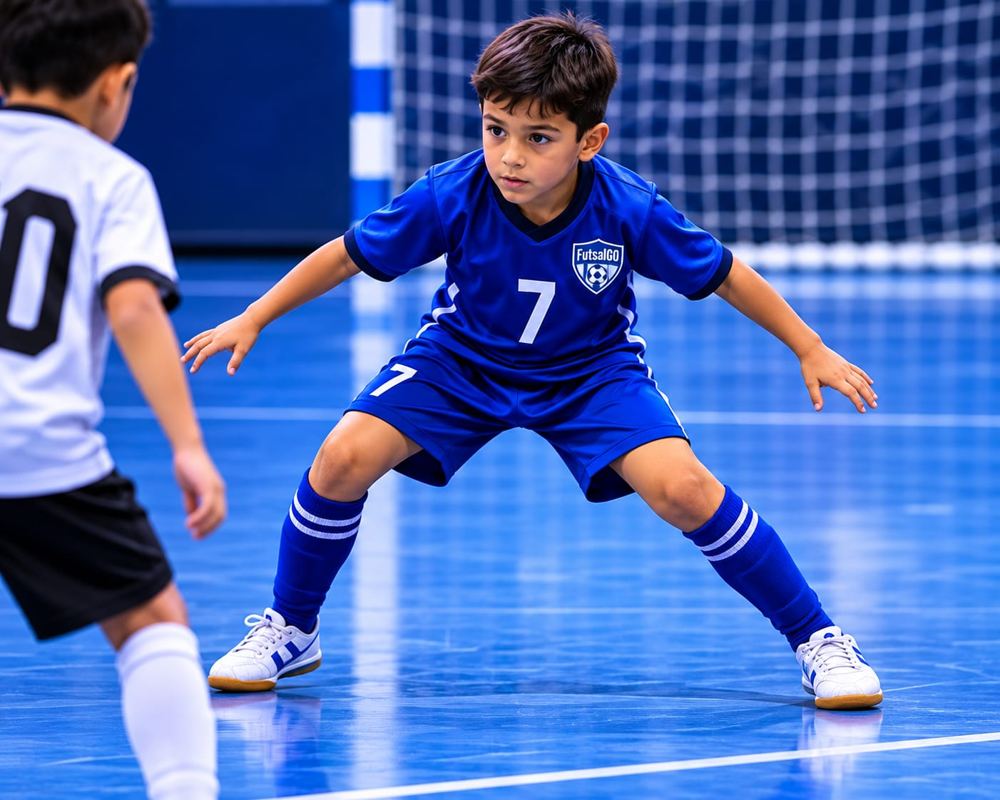

¿Qué es?
Es la postura que permite al cierre reaccionar rápidamente cuando el equipo contrario tiene el balón.
Pasos para practicar:- Coloca los pies separados aproximadamente al ancho de los hombros.
- Flexiona ligeramente las rodillas.
- Mantén la mirada en el balón y en el jugador contrario.
- Muévete con pasos cortos sin perder el equilibrio.
Consejo: no te quedes completamente erguido. Mantente preparado para moverte hacia ambos lados.